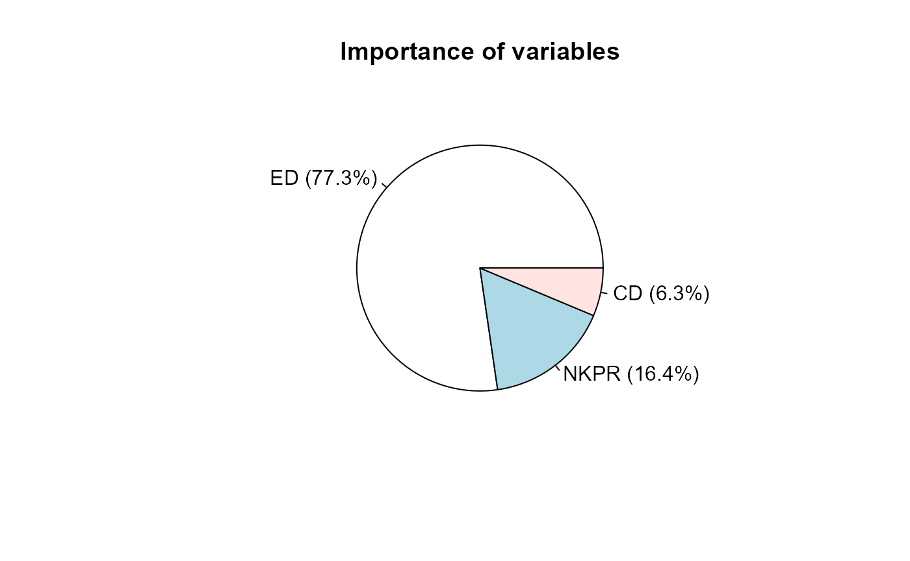

biotools has implementations to perform and work with cluster analysis, especially Tocher's method, and tools for evaluating clustering outcomes, such as a specific coefficient of cophenetic correlation, discriminant analysis, the Box'M test and the Mantel's permutation test. A new approach for calculating the power of Mantel's test is implemented. Some of those are illustrated in the next sections.
Target audience: agronomists, biologists and researchers of related fields.
You can install the released version on CRAN or the beta version from GitHub:
install.packages("biotools")
devtools::install_github("arsilva87/biotools")Load it:
library(biotools)## Loading required package: MASS## ---
## biotools version 4.1## Take the data set maize from biotools. They consist of multivariate observations on ears of five maize genotypes (families).
## NKPR ED CD PH family env
## 1 36.02031 4.333750 2.317500 2.087813 1 1
## 2 34.24688 4.045000 2.251250 1.892187 2 1
## 3 28.12656 3.741250 2.141250 2.119375 3 1
## 4 30.72500 4.321875 2.288125 2.085000 4 1
## 5 34.00625 4.660000 2.500625 2.100312 5 1
## 6 36.50000 4.328750 2.436250 2.196875 1 2Let us fit a MANOVA model and test for statistical significance of 'family' using Wilks' lambda.
## Analysis of Variance Table
##
## Df Wilks approx F num Df den Df Pr(>F)
## (Intercept) 1 0.001322 3272.8 3 13.000 < 2e-16 ***
## family 4 0.100255 4.0 12 34.686 0.00066 ***
## Residuals 15
## ---
## Signif. codes: 0 '***' 0.001 '**' 0.01 '*' 0.05 '.' 0.1 ' ' 1Now, one question is where are those differences? To answer that, multiple pairwise tests can be run. The function mvpaircomp() allows on to choose between multivariate statistics such as Wilks' lambda, Pillai's trace etc. to perform multiple tests on factor levels a fitted model.
mvpaircomp(M, "family", test = "Wilks", adjust = "bonferroni")##
## Multivariate Pairwise Comparisons
##
## Wilks approx F num DF den DF Pr(>F)
## 1 - 2 0.57758 3.1693 3 13 0.604689
## 1 - 3 0.32690 8.9225 3 13 0.017946 *
## 1 - 4 0.55591 3.4616 3 13 0.480571
## 1 - 5 0.67364 2.0994 3 13 1.000000
## 2 - 3 0.61192 2.7482 3 13 0.853092
## 2 - 4 0.60398 2.8413 3 13 0.789525
## 2 - 5 0.46341 5.0176 3 13 0.158342
## 3 - 4 0.31965 9.2230 3 13 0.015581 *
## 3 - 5 0.24296 13.5019 3 13 0.002738 **
## 4 - 5 0.80370 1.0584 3 13 1.000000
## ---
## Signif. codes: 0 '***' 0.001 '**' 0.01 '*' 0.05 '.' 0.1 ' ' 1
## With bonferroni p-value adjustment for multiple comparisonsOne requirement of the model fitted earlier is that is residual covariance matrices of the factor levels are homogeneous. Furthermore, in cluster analysis, it might be of interest to check if the covariance matrices of the clusters can be considered equals, especially if one intends to perform a linear discriminant analysis using a pooled matrix.In those cases, the Box's M-test can be applied. The function boxM() performs the test using an approximation of the \(\chi^2_\nu\) distribution, where \(\nu = \frac{p(p+1)(k-1)}{2}\), \(p\) is the number of variables and \(k\) is the number of levels.
Users should be aware that all clusters must have a positive definite covariance matrix. If there is any cluster/level containing fewer observations (rows) than the number of variables (columns), then its covariance matrix is probably not positive definite.
##
## Box's M-test for Homogeneity of Covariance Matrices
##
## data: res
## Chi-Sq (approx.) = 32.517, df = 24, p-value = 0.1147The function singh() runs the method proposed by Singh (1981) for determining the importance of variables based on the squared generalized Mahalanobis distance. In his approach, the importance of the \(j\)-th variable (\(j = 1, 2, ..., p\)) on the calculation of the distance matrix can be obtained by:
\[ S_{.j} = \sum_{i=1}^{n-1} \sum_{i'>i}^{n} (x_{ij} - x_{i'j}) ({\bf x}_i - {\bf x}_{i'})^T {\Sigma}_{.j}^{-1} \]
where \(x_{ij}\) and \(x_{i'j}\) are the observation taken at the \(i\)-th and \(i'\)-th objects (individuals) for the \(j\)-th variable, \({\bf x}_i\) is the \(p\)-variate vector of the \(i\)-th object and \({\Sigma}_{.j}^{-1}\) is the \(j\)-th column of the inverse of the covariance matrix.
Since \(S_{.j}\) is itself a measure of distance, it can be more appropriate to take the following proportion instead:
\[ \frac{S_{.j}} {\sum_{j=1}^{p} S_{.j}} \in [0, 1] \]
with the constraint \(\sum_{j=1}^{p} S_{.j} = \sum_{i=1}^{n-1} \sum_{i'>i}^{n} D_{ii'}^2\).
Using the proportion enable us to determine the relative importance of each variable.
Using the residual covariance of the fitted MANOVA model, let us calculate the importance of the three variables to discriminating observations.
## ED NKPR CD
## Singh statistic 2292.2558745 485.7898274 187.46962697
## Proportion 0.7729705 0.1638130 0.06321654
## Cumulative proportion 0.7729705 0.9367835 1.00000000
## attr(,"class")
## [1] "singh"
plot(s)
Cluster analysis consists of arranging multivariate observations into homogeneous clusters. There are several algorithms for cluster analysis, with different outcomes and objective functions. Tocher's optimization method allows one to establish mutually exclusive clusters, with no need to define the number of clusters. It has been widely used in studies of genetic/phenotypic diversity that are based on cluster analysis. Furthermore, Tocher's method can be used to determine the number of clusters in dendrograms.
Clusters are established according to an objective function that adopts an optimization criterion, which minimizes the average intra-cluster distance and maximizes the average inter-cluster distances (Silva & Dias, 2013). biotools contains the method suggested by K.D. Tocher (Rao, 1952) for clustering objects, based on the algorithm:
The process continues until the last remaining object is evaluated and either included in the last cluster formed or allocated to a new cluster. The function tocher() performs optimization clustering and returns an object of class tocher, which contains the clusters formed, a numeric vector indicating the cluster of each object, a matrix of cluster distances and also the input - a class dist object.
The 20 individuals (observation) from the maize data set are to be clustered. First, we need to comput the Mahalanobis generalized squared distance among them.
## [1] 0.2203346 61.4121118Then Tocher's method can be applied to determine clusters. For that we are using modified method (sequential algorithm) by Vasconcelos et al. (2007) and the residual covariance matrix.
toc <- tocher(d, algorithm = "sequential")
toc##
## Tocher's Clustering
##
## Call: tocher.dist(d = d, algorithm = "sequential")
##
## Cluster algorithm: sequential
## Number of objects: 20
## Number of clusters: 6
## Most contrasting clusters: cluster 5 and cluster 6, with
## average intercluster distance: 42.88234
##
## $`cluster 1`
## [1] 6 16 12 10
##
## $`cluster 2`
## [1] 7 13 2 8
##
## $`cluster 3`
## [1] 15 20 4 5
##
## $`cluster 4`
## [1] 9 19 3 17
##
## $`cluster 5`
## [1] 1 11 14
##
## $`cluster 6`
## [1] 18After obtaining the clusters, it might be useful to know how divergent they are from each other. In this context, cluster distances are calculated from the original distance matrix through the function distClust(). An intracluster distance is calculated by averaging all pairwise distances among objects in the cluster concerned. Likewise, the distance between two clusters is calculated by averaging all pairwise distances among objects in these clusters.
print(toc$distClust, digits = 2)## cluster 1 cluster 2 cluster 3 cluster 4 cluster 5 cluster 6
## cluster 1 3.6 14.3 11.8 15.4 9.9 29.6
## cluster 2 14.3 3.7 27.7 13.9 25.4 7.1
## cluster 3 11.8 27.7 3.5 15.1 7.5 41.1
## cluster 4 15.4 13.9 15.1 4.8 21.1 13.4
## cluster 5 9.9 25.4 7.5 21.1 12.6 42.9
## cluster 6 29.6 7.1 41.1 13.4 42.9 0.0Clustering validation is widely applied for hierarchical and iterative methods. Some measures of internal validation for a Tocher's clustering outcome are implemented on biotools.
The approach presented by Silva (2013) is implemented by taking the cluster distances in order to build a cophenetic matrix for clustering performed through the Tocher's method. Their approach consists of taking the cophenetic distance among objects located in the same cluster as the intracluster distance and the cophenetic distance between objects of different clusters as the intercluster distance. Then, the Pearson's correlation between the elements of the original and cophenetic matrix can be taken as a cophenetic correlation. The function to be called is cophenetic(), whose input is an object of class tocher and its output an object of class dist.
cop <- cophenetic(toc) # cophenetic matrix
cor(d, cop) # cophenetic correlation coefficient## [1] 0.7320551Is that cophenetic correlation significantly greater than zero? That quastion and others related to square matrix associations can be answered using Mantel's permutation test.
mantelTest(d, cop, nperm = 900)##
## Mantel's permutation test
##
## Correlation: 0.7320551
## p-value: 0.001109878, based on 900 matrix permutations
## Alternative hypothesis: true correlation is greater than 0A simple and efficient object classification rule is based on Mahalanobis distance. It consists of calculating the squared generalized Mahalanobis distances of each multivariate observation to the centre of each cluster. biotools performs this sort of discriminant analysis through D2.disc(), as follows:
Consider the \(i\)-th (\(i = 1, 2, ..., n_j\)) \(p\)-variate observation belonging to the \(j\)-th (\(j = 1, 2, ..., k\)) cluster, \({\bf x}_{ij}\). Let \(\bar{{\bf x}}_{j'}\) be the vector of means of the \(j'\)-th (\(j' = 1, 2, ..., k\)) cluster. The Mahalanobis distance from this observation to the centre of this cluster is given by
\[ D_{ij, j'}^2 = ({\bf x}_{ij} - \bar{{\bf x}}_{j'})^T {\hat{\Sigma}}_{pooled}^{-1} ({\bf x}_{ij} - \bar{{\bf x}}_{j'}) \]
where \({\hat{\Sigma}}_{pooled}\) is the estimate of the pooled covariance matrix for clusters.
Now consider \(C_j\) the random variable that represents the cluster at which the observation \({\bf x}_{ij}\) lies. The predicted class \(\hat{C}_{j'}\) for this observation is the one such that
\[ j' \Rightarrow \min_{j' = 1}^{k} ( D_{ij, j'}^2 ) \]
i.e., the object is allocated to the cluster whose distance from its centre is the smallest.
The output is the Mahalanobis distances from each observation to the centre of each cluster, the pooled covariance matrix for clusters and the confusion matrix, which contains the number of correct classifications in the diagonal cells and misclassifications off-diagonal. In addition, a column misclass indicates (with an asterisk) where there was disagreement between the original classification (grouping) and the predicted one (pred).
##
## Call:
## D2.disc.default(data = maize[, 1:3], grouping = maize$family,
## pooled.cov = cov(res))
##
## Mahalanobis distances from each class and class prediction (first 6 rows):
## X1 X2 X3 X4 X5 grouping pred misclass
## 1 0.6075575 9.712976 20.970574 9.584311 5.870589 1 1
## 2 3.6521169 3.202266 6.936814 10.989061 12.524312 2 2
## 3 16.5825884 4.874949 3.468493 10.094606 19.106220 3 3
## 4 10.7383299 16.714143 31.501871 4.121057 3.496142 4 5 *
## 5 11.9533308 22.662364 47.834072 7.030199 2.268491 5 5
## 6 1.7343324 4.486490 17.479342 8.732280 7.262779 1 1
##
## Class means:
## NKPR ED CD
## 1 36.10502 4.349705 2.369759
## 2 32.27656 4.019219 2.321406
## 3 30.05977 3.639063 2.127031
## 4 30.99883 4.243906 2.367656
## 5 33.70898 4.458906 2.425625
##
## Confusion matrix:
## new 1 new 2 new 3 new 4 new 5
## 1 4 0 0 0 0
## 2 0 3 1 0 0
## 3 0 0 4 0 0
## 4 0 1 0 1 2
## 5 0 0 0 0 4biotools also contains several other useful miscelaneous tools, such as the statistical tests for genetic covariance components, the exact test for seed lot heterogeneity, an approach for predicting spatial gene diversity and a function to perform path analysis dealing with collinearity.
Mantel, N. 1967. The detection of disease clustering and a generalized regression approach. Cancer Research 27:209–220.
Rao, C. R. 1952. Advanced statistical methods in biometric research. New York: John Wiley & Sons.
Silva, A. R., and C. T. S. Dias. 2013. A cophenetic correlation coefficient for Tocher's method. Pesquisa Agropecuaria Brasileira 48: 589–96.
Singh, D. 1981. The relative importance of characters affecting genetic divergence. Indian Journal Genetics and Plant Breeding 41: 237-45.
Vasconcelos, E.S., Cruz, C.D., Bhering, L.L., Resende-Jr, M.F.R. 2007. Metodo Alternativo para Analise de Agrupamento. Pesquisa Agropecuaria Brasileira 42:1421-1428.